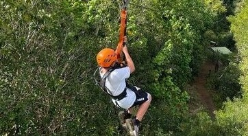

Activities
Have the best experience as you connect with the nature
Hiking

Will visit Karura forest for hiking. Karura forest is one of the top family-friendly hiking trail. This area is a paradise for nature lovers, since it has marshes, an abundance of tree varieties, and abundant birds. There are various hiking paths totaling 50 kilometers in length (31 mi). The path leads to a waterfall and caverns. The first two kilometers (1.2 miles) are a steady walk on a dirt path that, at a defined point, turns right and descends a steep slope all the way to the activities. From there, the terrain becomes more stable until you reach the caverns. During the battle for independence, it is believed that these caverns served as a shelter for the Mau Mau rebels. You will discover the waterfall farther down.
Mountain Climbing

Climbing enthusiasts will have an oppotunity go to Mount Kenya. At a height of 5,199 meters (17.058 ft), Mount Kenya is the second-highest peak in Africa. The three major summits of Mount Kenya, Batian 5.199m, Neon 5188m, and Point Lenana 4965m, climb abruptly from roughly 4.500m to the main summit. Mount Kenya is around 60 kilometers wide. On the mountain, there are three further significant summits: Point John 4,883m, Point Dutton 4,885m, and Point Piggott 4,957m. Only point Lenana can be accessed by hikers out of the three major peas (Batian Lenana and Nellon), with the other two being accessible by technical climbers.
Zip lining
Will have an opportunity to have pinnacle of ziplining at the Kereita forest which is situated in the middle of the Aberdare hills. From the heart of Nairobi, it takes approximately an hour to reach Kimende town through the Nairobi-Nakuru highway. The total length of their six separate zip lines exceeds 2.2 kilometers, making it the longest such attraction in all of Kenya. The zip line course is 80 meters above the native forest, providing an incredible vantage point for Eco tourists. It is the pinnacle of ziplining.